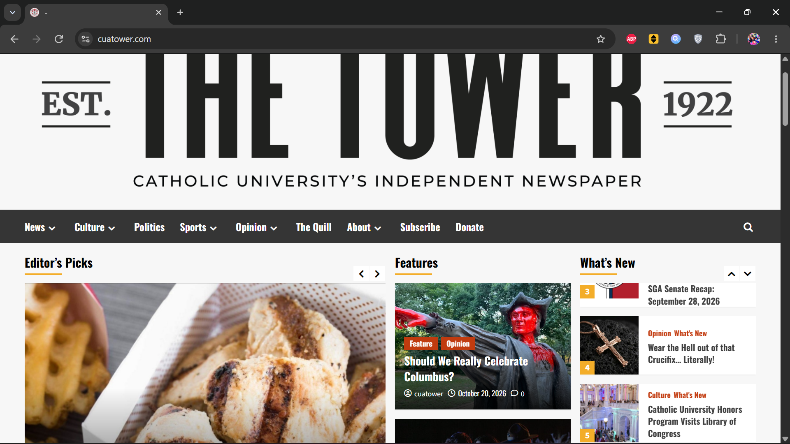
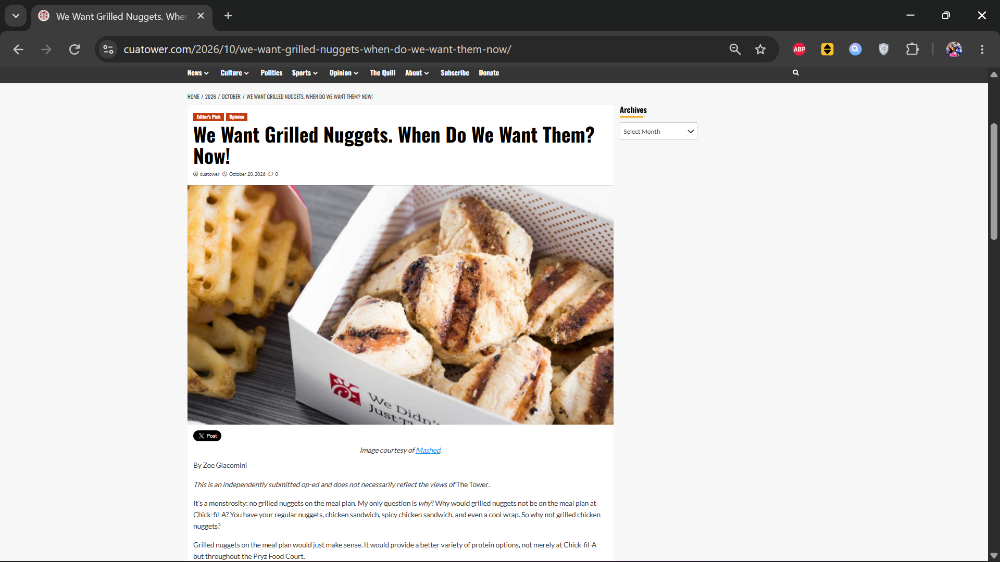
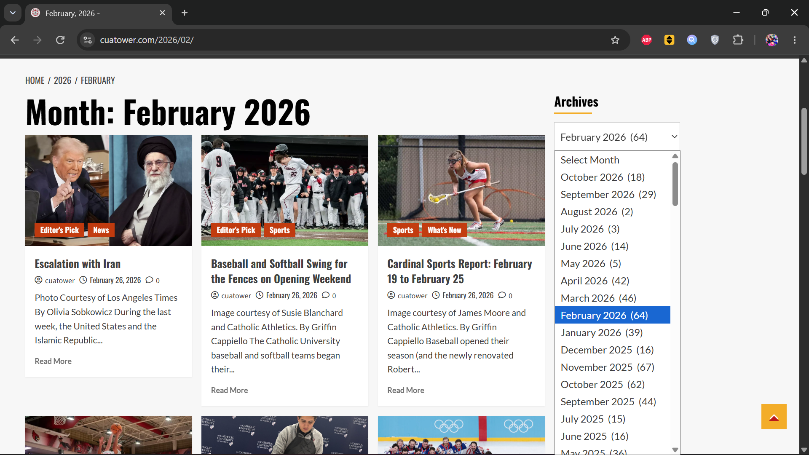

Assignment 2: System Analysis and Usability Test
Author: Donald Gallagher
Part 1
Step 1: Input/Output
| Input |
Output |
| Hovering the mouse over the “News” tab on the navigation bar below the website banner on the homepage. |
A dropdown menu appears below the tab listing “Campus,” “District,” “Student Government Association,” and “Administration and Academics.” |
| Clicking on an article box on the homepage under “Features” entitled “Zach Cregger’s Resident Evil is an Eerie if Oddly Funny Spookfest.” |
The page forwards to the full article on a seperate page reviewing the new 2026 Resident Evil film. |
| Clicking the dropdown menu under “Archives” halfway down the homepage and selecting “February 2026 (64).” |
The page forwards to a results section displaying articles posted exclusively during February 2026. 10 results are displayed, with 7 pages of results available. |
| On the results page for selecting “February 2026 (64)” from the “Archives” dropdown menu, scrolling to the bottom of the results section (but above the section entitled “You may have missed”) and clicking the box labeled “4.” |
The page forwards to the fourth page of results of Tower articles posted in February 2026, with 10 articles displayed. |
Step 2: Nielsen's Heuristics
Topic: Mullen Library has debuted a display discussing campus perspectives surrounding the extension of Metro’s Red Line to Brookland in 1978. In concert with the display, please find articles from The Tower concerning the Metro to capture more modern perspectives.
- A search bar found in the top right of the screen and always available on the navigation bar uses the conventional magnifying glass iconography to indicate its presence and function, and thus its usability to patrons (4: Consistency and Standards). The site does feature a lot of blocks for articles, which can include repeats of the same articles, so the homepage can feel cluttered or oversaturated with content (8: Aesthetic and Minimalist Design). Nevertheless the UI is pretty clean and easy enough to navigate.
- Search results for “Metro” return all articles with “metro” somewhere in its text. There is no tag for Metro so unrelated or irrelevant results return alongside relevant ones. Results are not consistently sorted by date so how results are being prioritized is unclear. Results are limited to 10 per page with no option to increase the number of results per page. All of these increase the difficulty/lack of convenience in parsing search results (7: Flexibility and Efficiency of Use; 8: Aesthetic and Minimalist Design).
- When a search result is selected, it navigates to the pertinent article. Articles are sorted according to month and year they are published, with the option to select their tags to find all articles that also have received that tag. The only way to return to search results after an article is selected is to use the browser’s back button, not anything on the site itself (3: User Control and Freedom).
- The most relevant Metro conversation found within The Tower is the U-Pass saga, where over multiple years student associations have debated implementing a WMATA program to reduce student Metro fares in exchange for an increase in tuition to cover the program’s costs. Finding articles detailing the more important points is easy enough, but smaller reports or articles in-context may slip through the cracks of the website’s limiting search results (5: Error Prevention).
Step 3: Strengths/Weaknesses Summary
- Strength 1: Parseability - There are a lot of different ways to parse articles on The Tower website. The homepage features recent articles and relevant stories, while at the top a navigation bar allows users to sort articles by category (sports, CUA news, politics, opinion pieces, etc.). A search bar in the navigation bar allows users to search articles by text (presumably). At the bottom of the homepage are links to all of the navigation bar options listed out. These options can also be navigated between individual article pages by selecting the red tags that each article is labeled with.

- Scrolling down on the homepage and available on every article page is a dropdown menu entitled “Archives” which allows users to sort articles by month and year. A number next to each month/year selection shows how many articles were published in that time, and selecting a month/year displays all the articles as such. If one is searching for a specific time period, they will find navigating to that point in time quite easy.

- Strength 2: Readability - Individual articles on The Tower all follow the same format: a title in large, bold font with tags in red listed above. Below in smaller font is the publisher (nearly always “cuatower”), date of publication, and number of comments on the article. A relevant image is displayed next with a caption below indicating where/how the image was sourced. Below the caption is the article’s author, followed by the text of the article. At the end of the article are links on the bottom left and bottom right leading to the previous and next articles in chronological order. This simple layout makes articles incredibly easy to read with no interruption, allowing users to focus on the article’s content without distraction.

- Weakness 1: Searchability - While The Tower website makes browsing through its backlog of articles easy through categorical tags and chronological access via the “Archives” drop down menu, searching for articles via content is much more difficult. As discovered in the topical search using Nielsen’s heuristics, attempting to use the search bar to find articles on topics not listed under a categorical tag is only marginally effective. Relevant articles do return if the right words/phrases are imputed, but some get left out because they use different words and some irrelevant articles are included because they contain the imputed text. Such difficulties are compounded by lack of search features for results, such as the ability to sort results by relevance, date, or another metric, or choose the number of results that appear per page. As a result parsing search results can become time consuming, inconvenient, and ultimately unsuccessful depending on the topic being searched.
- Weakness 2: Communicability - Despite acting as CUA’s premier student newspaper, The Tower lacks many openly available facets of communication with its community. The About page for the site is remarkably concise (consisting of exactly two sentences) and further information about the paper, such as its history or publication schedule, are buried inside articles not easily retrievable in the website. Staff contact information consists of student CUA emails, with no email exclusively for The Tower listed. The remaining pages under the “About” dropdown menu are a “Donate” link that takes users to a separate page hosted on CUA’s official website and an “Advertise” link that results in an HTTP error. No further information on how to contact The Tower is evidently available. Such information would be useful for individuals interested in submitting opinion pieces, volunteering in some fashion for the paper, or learning more about how the paper operates. The dearth in communication is evident in the lack of comments on articles. Users are able to leave comments on articles just like other news sites, but I could not find a single article with even one comment on it. If readers are engaging with material from The Tower with their peers, they are not doing so via the paper’s website.
Part 2
Step 4
See attached documents (Observation Form & Questionnaire) in Brightspace submission.
Step 5
Overall the results from the heuristic review and the mini-usability test revealed similar insights concerning efficiency and engagement. Both tests commended the design of The Tower's website for its chic aesthetic and easily navigable pages. Both tests liberally used the navigation bar, search bar, and "Archives" dropdown menu to successfully navigate the website, and found individual articles posted by The Tower to be simple yet engaging thanks to the page's continuous layout. Both tests found the website's functionality to be consistent with other websites and commended such consistency as contributing to the site's ease of use.
The Tower's biggest failure, however, is no doubt its searching functionality, or lack thereof. In tests involving looking for a specific topic, the website consistently returned search results that needed to be manually parsed, were not consistently sorted, could not be sorted by any specific metric, were limited by the small number of results displayed per page, and were rarely relevant to the submitted search criteria. In some cases articles returned because they contained a text match to the query (even if they were topically irrelevant) and in other cases unrelated articles returned with no explicable connection to the query. This produced considerable frustration in both tests, and is the website's main weakness towards useability.
Correcting the site's search function may require analyzing precisely how searches are conducted - given that is not clarified no suggestions can be offered on its behalf. Nevertheless some additional functionality would greatly improve the site's search function. Adding the ability to sort results by publication date or tag would make pulling relevant results from irrelevant ones much easier. Adding the ability to view more than ten results per page would make parsing articles more straightforward, not to mention reduce the number of clicks required to complete the search.
© Donald Gallagher 2026. All Rights Reserved. No generative artificial intelligence (AI) was used in the creation, writing, or editing of this work. Without limiting the author's exclusive rights under copyright, any use of this publication to train generative AI technologies is expressly prohibited.